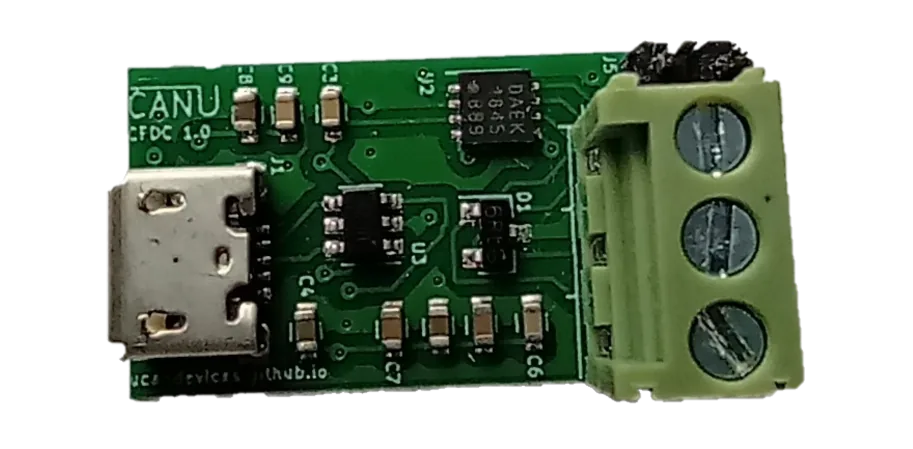
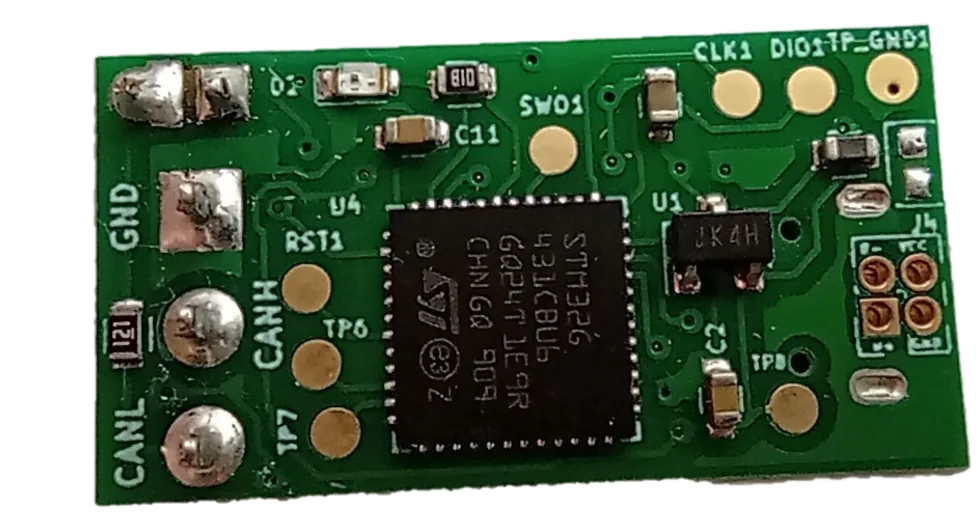
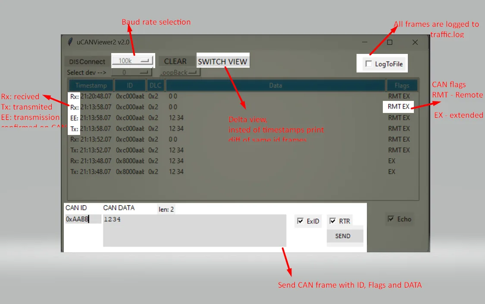

CANFD / CAN USB Converter (CFUC)
Open source CAN FD and classic CAN to USB converter. ISO CAN FD, SLCAN-style protocol, plug-and-play virtual COM port.
Buy with Card Buy on Tindie Source on GitHub
Product and its documentation is supplied on an as-is basis and no warranty as to their suitability for any particular purpose is either made or implied. Producer will not accept any claim for damages howsoever arising as a result of use or failure of this product. This product is not intended for use in any medical appliance, device or system in which the failure of the product might reasonably be expected to result in personal injury.
Description
CANFD / CAN USB Converter (CFUC) works as CAN and CAN FD to USB converter. Multiple features are supported like:


Application support
Ensure the gs_usb kernel module is enabled:
sudo modprobe gs_usbConnect device to USB, and check if initialized properly
sudo modprobe can_dev
ip link listThere should be sth like this
10: can0: NOARP,ECHO mtu 16 qdisc noop state DOWN mode DEFAULT group default qlen 10 link/canConnect UCCB device to CAN network.
Configure the device:
sudo ip link set can1 type can bitrate 1000000 dbitrate 4000000 fd onReplace can0 with the name of your device, and 500000 with the desired bitrate.
Bring the device up:
sudo ifconfig can0 up
Use the device with SocketCAN. For example,
candump can0For more tools see can-utils.
Windows 10/11 support
CAN is supported out of the box with uCANViewer.2.0

For FD support on windows CANFD converter on windows you need:
1. Install WSL as described here
2. If you are on windows 10 you need to compile latest kernel with CAN support there is no full tutorial on this but take a look at this page
3.To connect USB device follow this tutorial but in short.
Install usbipd
Ensure that device is visible in windows in powershell
usbipd wsl listYou should see device like below
5-1 1d50:606f cfuc, cfuc DFU interface Not attachedAttach device using (pick your number from list command, in my example 5-1 )
usbipd wsl attach --busid 5-1Now devices should be visible in wsl, check with lsusb
All stuff tools/sources/examples etc can be found here
Bootloader
Device have support for USB DFU bootloader for new firmware upload see dfu-utils tutorial.Drivers
Device support gs_usb driver, Device is powered directly from USB
Embedded software
Embedded software is opensource and details can be found hereHardware
Hardware is opensource schematic and PCB is done in KiCAD schematics hereReleases
For releases see release link If you want some QUI please check SavvyCANRandom useful commands
sudo ip link set can0 type can bitrate 1000000 dbitrate 4000000 fd on sudo ifconfig can0 txqueuelen 99 #extending queue optional but if you getting queue full error consider sudo ip link set can0 up #generate random FD frames on can cangen can0 -g 4 -I i -x -f -b #go to bootlader sudo dfu-util -l sudo dfu-util -e sudo dfu-util --dfuse-address -d 0483:df11 -c 1 -i 0 -a 0 -s 0x08000000:leave -D ucan_gsusb_fw.bin #detailed info about can0 ip -details link show can0 #loopback test sudo ip link set can0 type can bitrate 100000 dbitrate 1000000 fd on loopback on